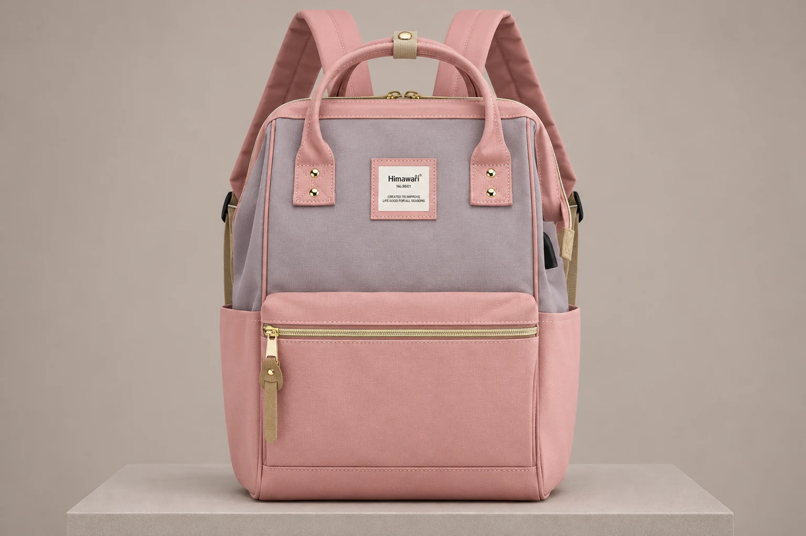
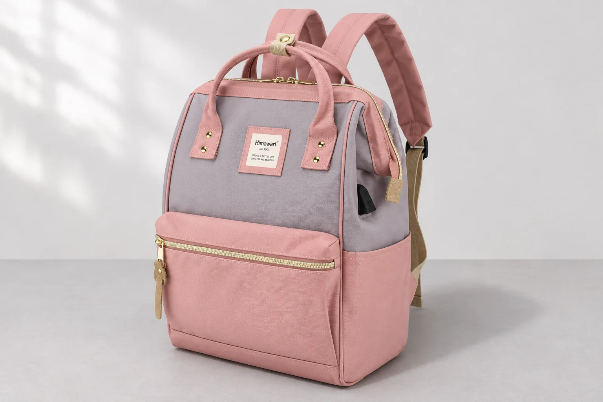
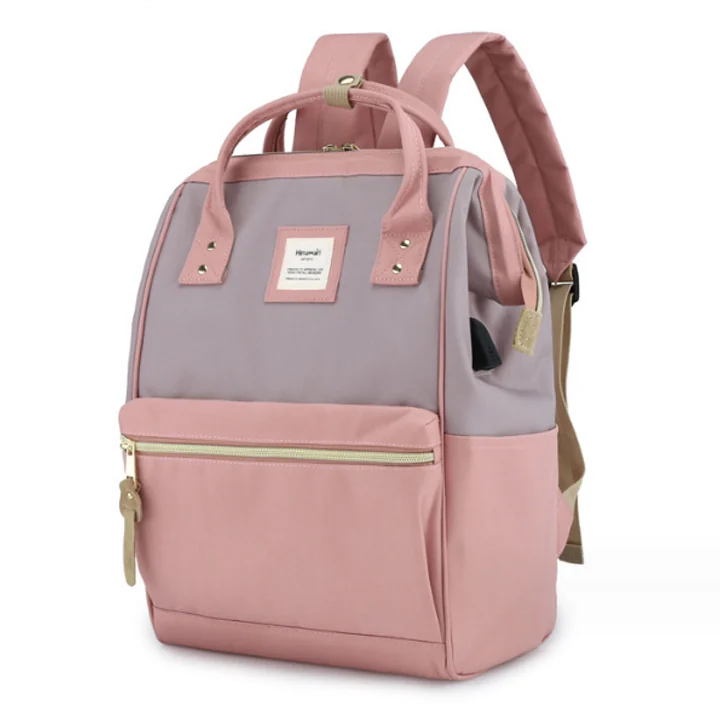

사진마다 백팩 폭이 달라 보이면 촬영 각도부터

정면 사진에서는 반듯한 백팩이 다른 사진에서는 위가 좁은 사다리꼴처럼 보입니다. 앞 포켓도 한쪽이 더 크게 느껴집니다. 다른 크기의 제품이라고 바로 결론 내리기 전에 카메라가 가방의 어느 면을 보고 있는지 살펴볼 만합니다. 사진 속 선의 방향과 실제 제품의 치수는 서로 다른 자료입니다.
No.9001 핑크그레이의 실제 공개 사진에는 회색 위쪽 몸판, 핑크색 손잡이와 아래 몸판, 금색으로 보이는 앞 포켓 지퍼가 있습니다. 외부 크기는 가로 28 × 세로 40 × 폭 17cm로 확인됩니다. 이 글의 새 연출 사진 두 장은 같은 모델을 정면에 가깝게 보는 장면과 위쪽 사선에서 보는 장면을 설명하기 위해 만들었습니다. 실제 두 제품을 측정해 비교한 실험 사진은 아닙니다.
정면에 가까운 사진에서 같은 선을 고릅니다
가방의 앞면을 거의 마주 본 사진에서는 위쪽 테두리와 앞 포켓 지퍼, 양쪽 옆선을 함께 볼 수 있습니다. No.9001에서는 두 손잡이가 고정된 핑크색 부위와 가운데 네모 로고가 기준이 됩니다. 로고 하나만 확대하기보다 손잡이 부착부와 지퍼가 한 화면에서 어떻게 놓이는지 봅니다. 두 사진에서 같은 부위를 찾을 수 있어야 선의 기울기를 비교할 수 있습니다.
가방이 사진 안에서 똑바로 서 있다는 것만으로 정면 촬영이라고 판단할 수는 없습니다. 한쪽 옆 포켓이 넓게 보이고 반대쪽은 거의 가려진다면 앞면을 비스듬히 보고 있는 장면일 수 있습니다. 이런 사진에서 화면 양쪽의 길이를 재어 가방이 비대칭이라고 단정하지 않습니다. 가까이 보이는 부위와 멀리 보이는 부위가 같은 조건에 놓여 있지 않기 때문입니다.
실제 제품 사진도 함께 남겨 둡니다. 새 연출 장면은 사진을 읽는 방향을 보여주는 보조 자료이고, 로고와 부품의 정확한 형태를 확인할 기준은 제품 원본입니다. 연출 이미지에서 더 선명하게 보이는 작은 글자를 실제 각인 내용으로 옮겨 적지는 않습니다. 손잡이 수나 앞 포켓 위치처럼 원본에서 확인되는 요소를 기준으로 비교합니다.

위에서 보면 위쪽 면도 앞면과 함께 들어옵니다
카메라가 가방 위쪽으로 올라가면 정면 사진에서 얇게 보이던 윗면이 더 드러납니다. 앞면의 위아래가 카메라에서 같은 거리에 놓이지 않으므로 선의 기울기와 면적의 인상도 달라질 수 있습니다. 니콘의 원근 제어 설명 역시 카메라의 촬영면과 피사체의 평행선이 나란하지 않을 때 생기는 사진의 형태 변화를 다룹니다. 이 설명만으로 특정 백팩이 실제로 변형됐다고 진단하지는 않습니다.
No.9001을 위쪽 사선에서 본 연출에서는 핑크색 앞 포켓의 윗선과 몸판 옆면이 함께 보입니다. 정면에서 가늘게 보이던 옆 포켓도 더 눈에 들어옵니다. 이 장면이 마음에 들어도 가방의 폭이 공개 치수 17cm보다 커졌다고 계산하지는 않습니다. 사진의 화소 길이를 자처럼 써서 실제 길이를 읽을 수는 없습니다. 촬영 거리와 방향도 함께 작용하기 때문입니다.
사진 자체를 바로잡으려고 임의로 늘이거나 찌그러뜨려 비교하는 방법도 조심합니다. 화면에서 네모가 되도록 수정하면 실제로 둥근 모서리나 천의 자연스러운 곡선까지 달라질 수 있습니다. 이미 보정된 사진이라면 어떤 부분을 얼마만큼 바꿨는지도 알기 어렵습니다. 비교 자료가 필요할 때는 원본을 보관하고 다른 방향의 실제 사진을 요청하는 편이 목적에 맞습니다.

기울어진 선과 몸판의 주름을 나누어 봅니다
가방 옆선이 모두 비슷한 방향으로 기울어 보이는 모습과, 한 부분의 천만 접혀 있는 모습은 살필 부위가 다릅니다. 전체 앞면과 윗면을 함께 보면 촬영 방향에 관한 질문을 만들 수 있고, 특정 봉제부의 변화가 궁금하면 그 주변을 가까이 볼 사진이 필요합니다. 한 장에서 두 현상을 모두 같은 원인으로 설명하려고 하지는 않습니다.
내용물이 있는지, 어떤 면에 기대어 있는지도 사진 밖에서 확인해야 합니다. 빈 가방이 자연스럽게 놓인 모습과 물건을 넣어 부푼 모습은 다를 수 있습니다. 이 글의 장면에 실제 짐을 넣은 결과나 모양 복원 시험은 포함하지 않았습니다. 한쪽 포켓이 두드러져 보이는 사진만으로 수납량, 하중, 변형 여부를 확인했다고 말할 수는 없습니다.
구매 후 현재 가방의 모양이 궁금하다면 평평하게 받칠 면을 정하고 같은 앞면이 보이게 사진을 남겨볼 수 있습니다. 천을 팽팽하게 당기거나 앞 포켓을 눌러 원본 사진에 맞추지는 않습니다. 전체 외곽과 궁금한 부위를 한 장씩 남기고 어떤 상태에서 촬영했는지 짧게 적습니다. 수선 여부는 사진의 원근 설명만으로 정하지 않고 실제 제품 상태와 판매자의 안내를 함께 확인합니다.
폭을 고르는 질문은 치수로 마무리합니다
No.9001의 핑크와 회색이 어느 면에서 많이 보이는지는 사진으로 살펴볼 수 있습니다. 옆모습이 마음에 드는지, 정면에서 앞 포켓의 비중이 좋은지도 각도별 사진을 고르는 이유가 됩니다. 다만 책상 옆에 들어갈 폭이나 특정 물건의 수납 가능성을 정하려면 각각의 실측 정보가 필요합니다. 외부 폭 17cm를 내부 수납 폭으로 바꾸어 쓰지는 않습니다.
문의에는 사진에서 무엇이 달라 보였는지 적습니다. 같은 옵션의 정면과 측면 사진이 필요한지, 가방 높이 정도에서 앞면을 마주 본 자료가 필요한지 구체적으로 남길 수 있습니다. 두 사진의 위아래 폭이 달라 보였다는 관찰과 제품이 잘못 만들어졌다는 판단을 한 문장에 섞지 않으면 요청할 자료가 또렷해집니다.
각도별 사진으로 예쁜 모습을 하나 고르면서 가방의 여러 면도 살펴볼 수 있습니다. 정면과 사선 사진을 같은 역할로 쓰지 않고, 실제 치수와 원본 사진을 함께 읽어 보세요. 그러면 사진 한 장에서 넓어 보였던 가방을 곧바로 큰 사이즈 후보로 바꾸는 대신, 내가 확인할 면과 숫자를 나누어 비교할 수 있습니다.
일반 구조와 제품 표기의 참고 자료: Nikon 원근 제어와 촬영 방향 설명.